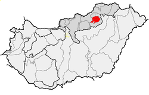
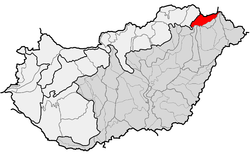

1.Melyik hegységünknek a legmagasabb pontja a Csóványos?
Badacsony Bakonny Börzsöny Bükk
2.Melyik a Zempléni-hegység legmagasabb csúcsa?
3.Melyek a Dunántúli-középhegység részei?
Több helyes válasz is lehetséges!
Budai_hegység Cserehát Gerecse Keszthelyi-hegység Mecsek Pilis Vértes Zselic
4.Melyik hegységünkben található Galyatető?
5.Melyik térkép jelzi pirossal a Bükk-hegységet?
Kattints a kiválasztott képre!


6. Milyen magas hegycsúcs az Írottkő?
7. Hány darab 1000 méter feletti hegycsúcs van Magyarországon?